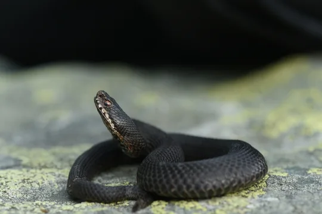
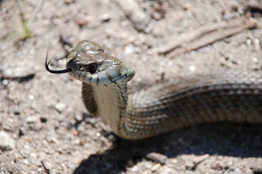
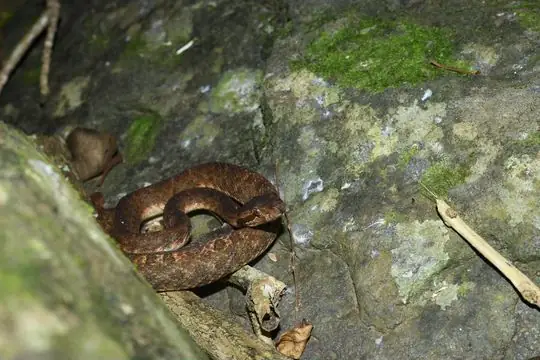
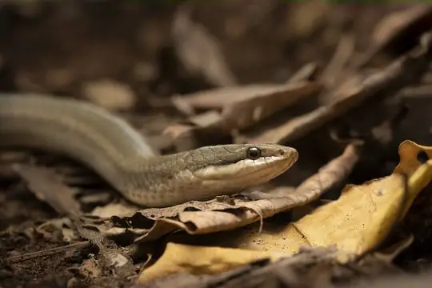
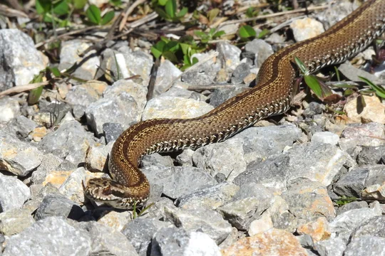
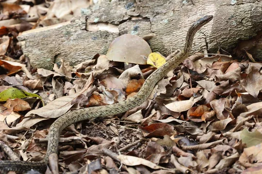
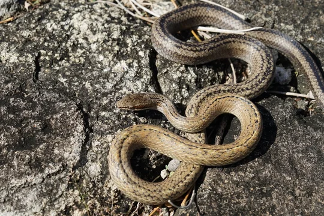
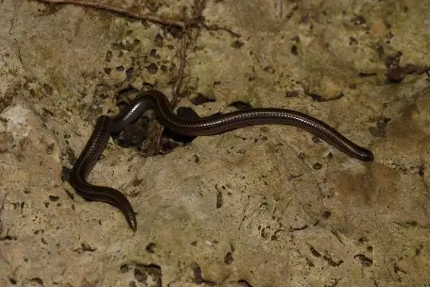

Snakes of France
25 living snake species are recorded in France in SnakeList: 7 venomous and 18 non-venomous, from 6 families. 24 fossil species found here are listed separately and not counted.
- 25living species
- 6families
- 24fossil, not counted
Danger to people · tap a number to show only those snakes
- 0giant constrictors
Harmful = dangerously venomous + giant constrictors. HarmlessLow risk = not venomous and not a giant constrictor. Mildly venomous snakes have no serious bites to people documented. Any snake can bite.
These totals count the unique living snake species SnakeList records in France; the 24 fossil species found here are listed separately and not counted. Territories that SnakeList lists as places of their own (French Guiana, New Caledonia, Saint Barthélemy, Saint Martin) have their own pages and are not counted here. A species counts if it is recorded anywhere in the country, so not every snake lives in every part of it.
In SnakeList’s checklist filters
How many of the 25 living species here each filter in the SnakeList app picks out – tap a number to show only those snakes. The app’s own counts for France also include the 24 fossil species listed separately below.
Snake family3 types, 6 families
Type
Family
Habitats12 habitat groups
Habitats are estimated from where each snake is recorded and what kind of snake it is, as in SnakeList; a snake can count in several.
Characteristics7 venomous, 4 constrictors
Constrictor and Non-constrictor count only snakes whose family or genus is documented as constricting or not; the rest are not documented.
Other filters1 popular, 4 rare
Species
Showing 25 species
 Aesculapian SnakeZamenis longissimus
Aesculapian SnakeZamenis longissimus Asp ViperVipera aspis
Asp ViperVipera aspis Balkan Whip SnakeHierophis gemonensis
Balkan Whip SnakeHierophis gemonensis Dark Green SnakeColuber viridiflavus
Dark Green SnakeColuber viridiflavus Dice SnakeNatrix tessellata
Dice SnakeNatrix tessellata- No photo yetEudeline's Worm SnakeMadatyphlops eudelini

European AdderVipera berus- No photo yetFranceses Island-LanceheadBothrops sazimai
 Grass SnakeNatrix natrix
Grass SnakeNatrix natrix Grass Snake (helvetica)Natrix helvetica
Grass Snake (helvetica)Natrix helvetica- No photo yetGuadeloupe Worm SnakeAntillotyphlops guadeloupensis

Iberian Grass SnakeNatrix astreptophora Ladder SnakeZamenis scalaris
Ladder SnakeZamenis scalaris
Martinique LanceheadBothrops lanceolatus Meadow ViperVipera ursinii
Meadow ViperVipera ursinii Montpellier SnakeMalpolon monspessulanus
Montpellier SnakeMalpolon monspessulanus
Peters' Bright SnakeLiophidium mayottensis
Seoane's ViperVipera seoanei Smooth SnakeCoronella austriaca
Smooth SnakeCoronella austriaca Southern Smooth SnakeCoronella girondica
Southern Smooth SnakeCoronella girondica
Terre-de-Bas RacerAlsophis danforthi
Terre-de-Haut RacerAlsophis sanctonum
Two-lined Blind SnakeTetracheilostoma bilineatum Viperine SnakeNatrix maura
Viperine SnakeNatrix maura Western Whip SnakeHierophis viridiflavus
Western Whip SnakeHierophis viridiflavus
No snakes in France match.
Fossil snakes found here
These snakes are known only from fossils found in France. They are not living species and are not counted in this page’s totals. The geological ages given are approximate: they come from the rock layers the fossils were found in, and the dating and classification of fossil snakes are revised as new material is studied.
- Bavarioboa bachensis (late Oligocene, about 25 million years ago)
- Bavarioboa crocheti (late Oligocene, about 25 million years ago)
- Bavarioboa vaylatsae (late Oligocene, about 25 million years ago)
- Boa blanchardensis (late Pleistocene, about 12,000 years ago)
- Cadurceryx filholi (late Eocene, about 36 million years ago)
- Coluber cadurci (early Miocene, about 18 million years ago)
- Coluber dolnicensis (middle Miocene, about 12 million years ago)
- Dolniceophis lehmani (early Miocene, about 17 million years ago)
- Eoanilius europae (late Eocene, about 37 million years ago)
- Michauxophis occitanus (late Pliocene, about 3 million years ago)
- Micrurus gallicus (middle Miocene, about 11 million years ago)
- Naja romani (latest Miocene, about 6 million years ago)
- Natrix longivertebrata (late Pliocene, about 3 million years ago)
- Natrix merkurensis (early Miocene, about 18 million years ago)
- Natrix mlynarskii (early Oligocene, about 31 million years ago)
- Paleoheterodon arcuatus (late Miocene, about 6.5 million years ago)
- Paleryx cayluxi (fossil; age not recorded in SnakeList)
- Platyspondylia lepta (late Oligocene, about 24 million years ago)
- Platyspondylia sudrei (middle Eocene, about 39 million years ago)
- Plesiotortrix edwardsi (fossil; age not recorded in SnakeList)
- Python europaeus (early-middle Miocene, about 15 million years ago)
- Simoliophis rochebrunei (Late Cretaceous (Cenomanian), about 95 million years ago)
- Szyndlaria aureomontensis (middle Eocene, about 44 million years ago)
- Typhlops grivensis (middle Miocene, about 12 million years ago)
France’s snakes in numbers
- Families: Colubridae 14, Viperidae 6, Typhlopidae 2, Leptotyphlopidae 1, Psammophiidae 1, Pseudoxyrhophiidae 1.
- 7 are recorded in no other country or territory in SnakeList: Eudeline's Worm Snake, Guadeloupe Worm Snake, Martinique Lancehead, Peters' Bright Snake, Terre-de-Bas Racer, Terre-de-Haut Racer, Two-lined Blind Snake.
How precisely they are recorded
Of the 25 living species recorded in France, 20 are recorded by region in SnakeList’s data; 5 are recorded only for France as a whole, so the region pages list them as possible rather than recorded. SnakeList records each species by region, not by exact spot, so a species listed for a region may live in only part of it.
Regions
The regions where SnakeList records snakes, with how many living species are recorded in each. Each page has its species, venomous snakes, families, the species found only there, its cities and neighbours.
- Auvergne-Rhône-Alpes 11 species
- Bourgogne-Franche-Comté 7 species
- Bretagne 5 species
- Centre-Val de Loire 7 species
- Corse 1 species
- Grand Est 5 species
- Guadeloupe 3 species
- Hauts-de-France 3 species
- Île-de-France 5 species
- Martinique 2 species
- Mayotte 2 species
- Normandie 5 species
- Nouvelle-Aquitaine 9 species
- Occitanie 11 species
- Pays de la Loire 7 species
- Provence-Alpes-Côte-d'Azur 10 species
No place matches that.
Cities
Its biggest cities, biggest first. SnakeList records snakes by region, not by city, so each city page shows the species recorded in its region and, separately, those only possible there - not species confirmed in the city.